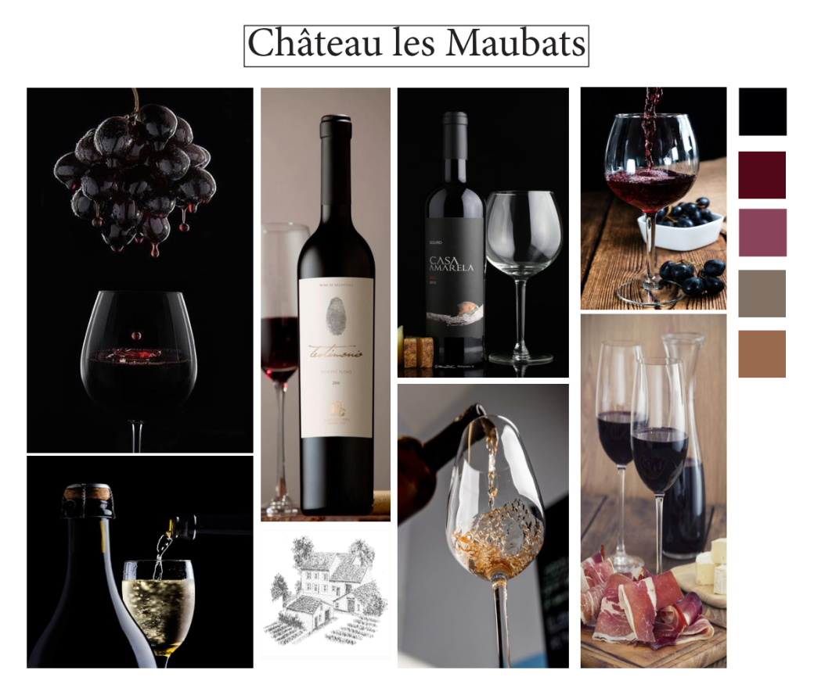

Photographie
Durée
1 semaine
Équipe
6 Personnes
Applications
Adobe Lightroom, Photoshop
Lors de ce projet, j'ai dû, avec mes 5 camarades, prendre contacter avec une entreprise bordelaise afin de mettre en avant leur produit en réalisant un packshot photo professionnel. J'ai donc eu l'occasion de faire des photos pour la marque de vin bordeaux Château les Maubats. Dans le cadre de ce travail, j'ai notamment appris à prendre en main le logiciel Adobe Lightroom.
Rendu final :
